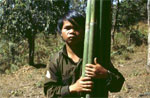
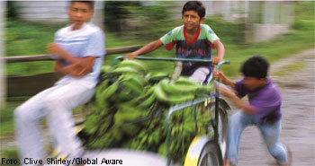

|
Zum Weltkindertag am 20. September
Zahl der Kindersoldaten unverändert hoch - neue Studie dokumentiert Menschenrechtsverletzungen der burmesischen Regierung |
Die Zahl der Kinder und Jugendlichen, die weltweit als Soldaten im Einsatz sind, ist nach wie vor hoch. Noch immer müssen schätzungsweise 250.000 Kindersoldaten in regulären Einheiten, paramilitärischen oder Guerillaverbänden dienen – obwohl der Einsatz von Kindersoldaten in inzwischen 104 Staaten geächtet ist. Auf diesen Umstand macht das entwicklungspolitische Kinderhilfswerk terre des hommes aus Anlass des Weltkindertages am 20. September aufmerksam.
Besonders dramatisch ist die Situation in Burma: Eine von einer burmesischen Nichtregierungsorganisation heute vorgestellte Studie zur Situation von Kindersoldaten in dem südostasiatischen Land dokumentiert, dass die burmesische Regierung verstärkt und systematisch Minderjährige zwangsrekrutiert. »Viele Kinder und Jugendliche werden auch massiv eingeschüchtert, damit sie sich scheinbar freiwillig melden«, so Wolf-Christian Ramm, Pressesprecher von terre des hommes. »Da in Burma das Mindesteintrittsalter in die Armee 18 Jahre ist, wird oft unter Druck ein falsches Alter angegeben. So werden auch 13-Jährige an die Front geschickt.« Schätzungen beliefen sich auf mehrere zehntausend Kinder und Jugendliche, die in Burma als Kindersoldaten missbraucht werden.
Der burmesische Staat hat unter internationalem Druck ein Komitee ins Leben gerufen, um die anhaltenden Rekrutierungen Minderjähriger zu überwachen und zu reduzieren. »Allerdings wird in der Studie kritisiert«, so Ramm, »dass das Komitee wenig in diese Richtung unternommen hat. Vielmehr war es vor allem damit beschäftigt, Vorwürfe abzustreiten, in Burma würden Kindersoldaten eingesetzt.« terre des hommes fordert dringend, das offizielle Mindesteintrittsalter konsequent einzuhalten und diejenigen zu bestrafen, die dagegen verstoßen.
Ebenso ernst ist die Situation in Kolumbien, wo vor allem nicht-staatliche bewaffnete Gruppen wie Paramilitärs und die Guerilla für den Einsatz von Kindern als Soldaten verantwortlich sind. »Diese Gruppen fühlen sich nicht an völkerrechtliche Normen gebunden und sind nur sehr schwer zu kontrollieren«, erklärte Wolf-Christian Ramm. »Es gibt zwar ein staatliches Demobilisierungsprogramm, das sich auch an Kindersoldaten aus den Einheiten der Paramilitärs richtet. Doch ergibt sich die paradoxe Situation, dass sich auch andere Jugendliche als vermeintliche ehemalige Soldaten melden, um an Ausbildungsprogrammen teilnehmen zu können. Dadurch geraten die Jugendlichen ins Visier der paramilitärischen Gruppen und werden in deren Einheiten integriert.« terre des hommes setzt sich seit vielen Jahren dafür ein, Jugendlichen Ausbildungsmöglichkeiten zu bieten, damit sie sich nicht in diesen Teufelskreis begeben müssen.
Weitere Informationen:
|
"die zeitung": Aufbruch in Südamerika: Soziale Bewegungen als Hoffnungsträger |
Regelmäßig berichtet die terre des hommes-Zeitung über die Arbeit in den Projektländern, über die Situation von Kindern, und sie informiert über die Aktivitäten und Kampagnen von terre des hommes. Alle Spender erhalten diese Zeitung kostenlos. In der aktuellen Ausgabe 02/2006 widmet sich das Magazin dem Themenschwerpunkt Südamerika. Hiervon veröffentlichen wir als Auszug folgenden Artikel. Die aktuelle Ausgabe finden Sie im Downloadbereich auf www.tdh.de.
Aufbruch in Südamerika: Soziale Bewegungen als Hoffnungsträger

Journalistenbesuch bei einem terre des hommes-Partner in Pampahasi, einem Randviertel der bolivianischen Hauptstadt La Paz im vergangenen Oktober: Die Nachbarschaftskomitees, die Vereinigung arbeitender Kinder, eine Elterninitiative und die Erzieherinnen des örtlichen Kindergartens kommen während der Vorstellungsrunde schnell zur Sache: Name, Organisation, Problem. Eins davon nennen sie immer wieder: den Wasserpreis.
Ein Schuster meint, er müsse demnächst sein Geschäft schließen. Für seinen Ein-Mann-Betrieb in einer Häusernische bezahlt er den kommerziellen Tarif, der deutlich über dem eines Privathaushaltes liegt. Eine Frau schimpft, dass ein Neuanschluss umgerechnet rund 333 Euro kostet, in diesem Stadtteil ein Jahresgehalt, seit das Unternehmen Aguas de Illimani die Wasserversorgung übernommen hat. Bis 1997 war die Wasserversorgung in La Paz öffentlich und wurde von der Weltbank unterstützt. Dann forderte sie die Privatisierung. Die Wasserwerke von La Paz gingen an das Konsortium Aguas de Illimani, dessen Aktienmehrheit der französische Konzern Suez Lyonnaise hält.
In den letzten beiden Jahrzehnten verfolgten die Staaten Lateinamerikas fast durchgängig eine neoliberale Wirtschaftspolitik, die die Vorgaben von Weltbank und Weltwährungsfonds (IWF) umsetzte. Das bedeutete: Sparhaushalte, Privatisierung öffentlicher Unternehmen und die weitgehende Zerstörung sozialer Sicherungssysteme, sofern sie denn existierten.
Kurzfristig wuchs das Bruttosozialprodukt, meist aber nur dadurch, dass öffentliche Unternehmen verkauft wurden und die Privatisierung einmalig Erlöse in die öffentlichen Kassen brachten. Damit wurde aber keines der drängenden Probleme gelöst: Arbeitslosigkeit, Perspektivlosigkeit der jungen Generation, Altersarmut, Niedergang des Bildungs- und Gesundheitswesens, Kriminalität, Betriebsschließungen, Verarmung der Mittelschichten. Und so verloren in den meisten Ländern die etablierten Parteien an Einfluss.
Gegen diese Politik regte sich allenthalben Protest der sozialen Bewegungen: Zu traditionellen Akteuren wie Gewerkschaften und Bauernorganisationen kamen neue wie Landlosenbewegungen, indianische Organisationen, Stadtteilkomitees, Arbeitslosengruppen hinzu. Straßenblockaden, Belagerungen öffentlicher Gebäude und Landbesetzungen waren an der Tagesordnung. Gleichzeitig erstarkten neue, eher linke Parteien.
Solche wurden in den letzten Jahren in Venezuela, Brasilien, Argentinien, Uruguay, Bolivien und Haiti in die Regierung gewählt. Die Erwartungen sind enorm. Doch die Handlungsspielräume werden häufig maßlos überschätzt. Die neuen Regierungen können langfristige Verträge, die ihre Vorgängerinnen mit internationalen Unternehmen und Banken getroffen haben, nicht einfach kündigen. Sie würden dann vor Institutionen wie der Welthandelsorganisation (WTO) oder internationalen Gerichten verklagt und regresspflichtig gemacht. Ohnehin sitzen viele Staaten noch in der Schuldenfalle. Jedes Quartal werden Zinszahlungen in meist dreistelliger Millionenhöhe fällig.
Wohl aber können die neuen Regierungen den völligen Ausverkauf der nationalen Reichtümer stoppen. Unter anderem auf Grund der großen Nachfrage Chinas und anderer asiatischer Länder steigen seit einiger Zeit die Preise für viele Rohstoffe. Doch bislang profitieren davon vor allem internationale Förderunternehmen und Agrarbusiness. Die neue bolivianische Regierung unter Evo Morales hat mit ihrer Ankündigung, die Öl- und Gasförderung zu verstaatlichen, jedoch vorgemacht, wie man Konzerne zu Verhandlungen und besseren Vertragsbedingungen zwingen kann. Das blieb nicht ohne Folgen: Nur zwei Wochen später kündigte die ecuadorianische Zentrumsregierung die Verträge mit dem US-Konzern Occidental. Die Unternehmen müssen seitdem höhere Abgaben zahlen.
Nach den sozialen Rückschritten in den vergangenen beiden Jahrzehnten wird unter dem Druck der sozialen Bewegungen vielerorts in Lateinamerika eine neue Politik versucht, die den verarmten Bevölkerungsmehrheiten – bescheidene – soziale Verbesserungen bringen könnte.
Gaby Küppers/Gert Eisenbürger
in "die zeitung" 02/2006, Themenschwerpunkt Südamerika
Download als PDF
|
Neue terre des hommes-Studie: Kinderhandel in Südosteuropa |
 Die Internationale Föderation terre des hommes hat eine neue Studie zu Kinderhandel in Südosteuropa vorgestellt. Die Studie beschreibt die Erfahrungen aus rund fünf Jahren Engagement gegen Kinderhandel in der Region. Die Internationale Föderation terre des hommes hat eine neue Studie zu Kinderhandel in Südosteuropa vorgestellt. Die Studie beschreibt die Erfahrungen aus rund fünf Jahren Engagement gegen Kinderhandel in der Region.
Die Studie liegt auf Englisch vor und steht zum Download bereit unter:
www.stopchildtrafficking.org
|
Sicherheitspolitik beeinflusst zunehmend humanitäre Hilfe und Entwicklungszusammenarbeit |
Der Anschlag auf das World Trade Center in New York vor fünf Jahren und der nachfolgende sogenannte „Krieg gegen den Terror“ haben prekäre Auswirkungen auf die internationale Entwicklungszusammenarbeit. Darauf haben heute die im „Bündnis Entwicklung hilft“ zusammengeschlossenen Nichtregierungsorganisationen in Berlin hingewiesen.
Zwar seien die Budgets für entwicklungspolitische Maßnahmen in den Ländern, in denen Militäreinsätze stattfinden, deutlich erhöht worden, sagte der Generalsekretär der Deutschen Welthungerhilfe, Hans-Joachim Preuss. Damit einher gehe aber auch der massive Versuch der Geberländer, Einfluss auf die Arbeit der Hilfsorganisationen zu nehmen. In bestimmten Regionen würden sie zunehmend als „Aufräumtrupps“ instrumentalisiert, wo Militärschläge die Infrastruktur zerstört hätten.
Es gebe starke Anzeichen dafür, so Preuss, dass die Vermischung von Militär und Hilfsorganisationen die Sicherheitslage in Ländern wie Afghanistan nicht verbessert habe. Dort sei sie inzwischen sogar schlechter als zu Zeiten der Mudschahedin und der Taliban. Das Misstrauen in der Zivilbevölkerung gegenüber Hilfsorganisationen sei gewachsen, weil Helfer und ausländische Soldaten in der Wahrnehmung der Menschen immer mehr verschmölzen. Die Folge seien Angriffe mit Dutzenden von Toten vor allem unter den einheimischen Mitarbeitern der Hilfswerke.
Peter Mucke, Geschäftsführender Vorstand des Kinderhilfswerks terre des hommes, berichtete, dass seit 2001 auch solche Konflikte, die mit den Anschlägen von New York nicht in Verbindungen stehen, inzwischen als Teil des „Krieges gegen den Terror“ legitimiert würden. So sei in diesem Zusammenhang in Kolumbien und in Bolivien der Anti-Drogen-Kampf verschärft worden. Die Gewalt sei sprunghaft angewachsen, ganze Dörfer gerieten zwischen die Fronten von Armee, Paramilitärs und Guerilla. Es komme zu massiven Menschenrechtsverletzungen. Mucke kritisierte die Deutsche Botschaft in Bolivien. Sie habe zwar keine Stellung zu den Übergriffen der Militärs gegen die Koka-Bauern bezogen, aber terre des hommes aufgefordert, künftig nicht mehr mit den lokalen Bauernorganisationen zusammen zu arbeiten, die einst von Evo Morales, dem damaligen Bauernführer und heutigen Präsidenten Boliviens vertreten wurden.
Mit der zunehmenden Verlagerung von politischen Lösungen der Konfliktursachen auf militärische Einsätze gerieten die nichtstaatlichen Entwicklungsorganisationen und ihre Partner in den Entwicklungsländern unter einen Generalverdacht, berichtete Thomas Gebauer, Geschäftsführer von medico international. Wo sie für den Schutz der Menschenrechte einträten und friedliche Strategien zur Konfliktlösung anmahnten, werde ihnen immer häufiger unterstellt, den Terrorismus zu unterstützen.
Die Sprecher der Organisationen warnten davor, humanitäre Einsätze und Entwicklungszusammenarbeit militärstrategischen Gesichtspunkten unterzuordnen. Es komme hingegen darauf an, die menschliche Sicherheit zu erhöhen durch die Verminderung von Hunger und Armut und die Verbesserung der Lebensumstände. Dabei sei es gerade nach dem 11. September 2001 erforderlich, Entwicklungszusammenarbeit auf Augenhöhe mit den Partnern zu leisten. Die Dominanz westlicher Gesellschaftsbilder müsse vermieden werden, weil das Gefühl der Unterlegenheit vieler Menschen in Entwicklungsländern noch verstärkt werde. Das führe unweigerlich zu Gegenreaktionen.
Weitere Informationen: Homepage des Bündnisses "Entwicklung hilft" |
|
|
|
 Ansprechpartner Ansprechpartner
|
|
Wolfgang Deppisch
(Projektinfos)
Tel. 07222 / 32927
Heinz Wolf
(Sponsoring, Allgemeines)
Tel. 07225 / 75543
weitere Ansprechpartner
|
|
Erlöse
1992-2012
|
|

Jahr |
Euro |
1992 |
70.000 |
1993 |
75.600 |
1994 |
83.883 |
1995 |
69.617 |
1996 |
51.412 |
1997 |
61.749 |
1998 |
60.333 |
1999 |
68.742 |
2000 |
85.492 |
2001 |
106.375 |
2002 |
78.937 |
2003 |
84.027 |
2004 |
76.662 |
2005 |
149.941 |
2006 |
84.497 |
2007 |
105.958 |
2008 |
104.053 |
2009 |
100.833 |
2010 |
107.254 |
2011 |
103.600 |
| 2012 |
158.250 |
| 2013 |
163.420 |
1977-2013 |
mehr als 2,7 Mio. € |
|
Detailansicht der Erlöszahlen |
|
|


;)